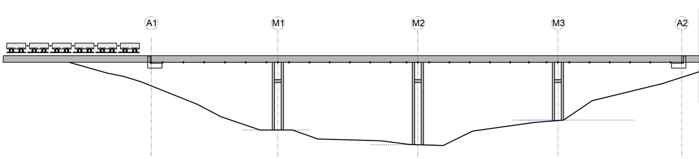
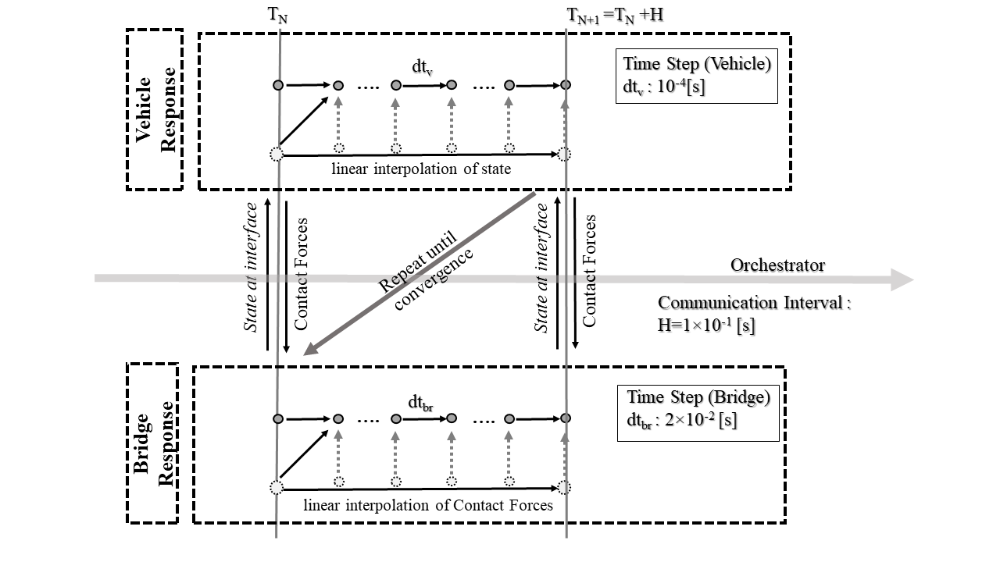
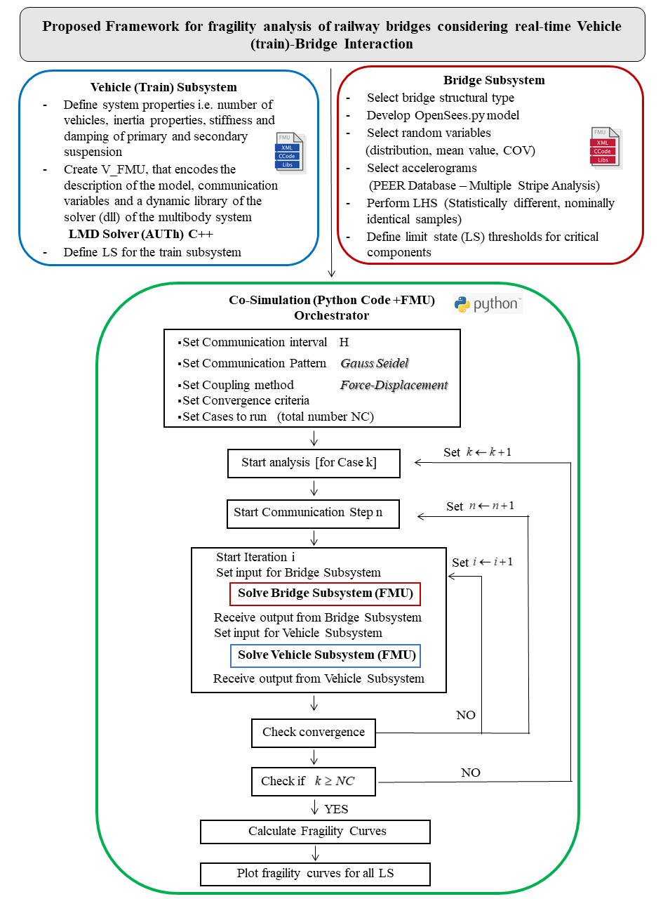

Roadmap¶
overview¶
Coupled simulation or co-simulation has been proposed to overcome the challenges emerging in complex, coupled engineering systems. The holistic problem is being broken down into two or more individual subsystems, and the coupling variables between the subsystems could be either in force terms (applied-force coupling), or in force-kinematic terms (displacement-displacement (X-X) and displacement-force (X-T) respectively). A third simulator, named orchestrator, carries out the co-simulation process responsible for the integration, coupling, and communication between subsystems. The orchestrator leads each co-simulation step (communication interval), exchanges variables with the subsystems simulators, and checks the coupling conditions (convergence). In the co-simulation method, each subsystem has its integration step, a fraction of the communication interval. It is outlined that the orchestrator is only aware of the interface variables going in and out of the individual simulators; thus, the subsystems are black-box mock-ups to the orchestrator. The input parameters for the vehicle subsystem are the position and velocities of the rails, and the output parameters are the contact forces (direction, magnitude, location) at the wheel-rail interface. Regarding the bridge subsystem, the input parameters are the contact forces (direction, magnitude, location), and the output parameters are the position and velocities of the rails. The orchestrator sends input and receives output parameters to and from the subsystems. It also defines the solution sequence, checks if convergence is achieved, and updates the system state. It is outlined that the rail is described as a piecewise cubic spline with a predefined set of control points selected by the user and does not necessarily coincide with nodal points of the structural mesh. The coordinates and velocities of these points are time-dependent and computed from the displacements and velocities of the bridge finite element model. Therefore a time-dependent expression of the position and velocity of the rail is obtained. Regarding the communication scheme, the Gauss-Seidel (serial) communication scheme is proposed to solve the vehicle(train)-bridge system in the time domain. The bridge subdomain is first solved at each iteration for the communication interval H (starting point T N), taking the contact forces (time-dependent) as input from the vehicle subdomain and the selected ground motion. The output parameters after analysis are the position and velocity of the rail. The vehicle subdomain is subsequently solved for the same time interval, receiving the rails’ updated state (time dependent) as input. The output parameters after analysis are the contact forces, i.e. their magnitude, direction, and location. The orchestrator utilizes the results of the subdomain analyses, checks the convergence criteria. The process described is repeated until they are satisfied (convergence). Then, the co-simulation can proceed to the next communication point. To summarize, the main steps for each communication interval are the following:
Solution of the bridge subsystem from T N to H+T N, taking the ground motion and the vehicle forces as input. The state of the system is stored, and the state of the rail (position and velocities) is returned to the orchestrator.
Solution of the vehicle subsystem from T N to H+T N, taking the state of the rail as input. The state of the system is stored, and the forces (position, direction, magnitude) at the contact points of the wheelset and the rail are returned to the orchestrator.
Convergence check. If the selected criteria are satisfied then the sub systems are updated and are initialized to begin the next cosimulation step. If convergence is not obtained, then the systems are reset and iterations are continued.
It should be outlined that the vehicle subdomain is solved using a multibody dynamics method developed at the Laboratory of Machine Dynamics (AUTh. The bridge subdomain is solved via Opensees, a general FEM open-source code. The coupled vehicle-bridge systems’ analysis procedure is described in the following figures, explaining the analysis of every subsystem at every distinct step and the communication pattern.
  {kind=link}
{kind=link}
{kind=link}
main¶
The main script executes the set of all analyses. In this script, only the dimension of parameters set, the direction of earthquakes, and the number of earthquake intensities is defined. For each analysis, the orchestrator is called to perform the solution of the coupled problem.
import subprocess
import time
import os
import signal
import psutil
import gc
# i - length of set of parameters
# j - number of earthquakes in each set (10 earthquake intensities)
dirEQ = 1 # 1 = longit. dir , 2 = transverse dir
for i in range(1,100):
for j in range(1,10):
cmd = "python .\dev\PyCoSimulation\src\orchestrator.py {case} {eq} {dir}".format(case=str(i), eq=str(j), dir=str(dirEQ))
cmd = cmd.split()
process = subprocess.Popen(cmd)
pid = process.pid
process.wait()
process.kill()
outputs,errs=process.communicate()
For each line on the file dev\PyCoSimulation\src\Parameters.txt the system is solved for all selected accelerograms. The selected erthquakes are included in subfolders in dev\PyCoSimulation\earthquakes. Each folder, e.g \earthquakes\5 ten(10) accelerograms included with gradual intensity(0.1 - 1.0 g). The orchestrator reads each accelerogram. Afterward, it sends the accelerogram as an argument to the bridge submodel. Finally, a selected irregularity is applied for the rails. This is included in the file dev\PyCoSimulation\src\Parameters.txt. The orchestrator reads the irregularity, and it is sent to the vehicle subsystem.
orchestrator¶
The orchestrator class contains all the necessary parameters for the cosimulation analysis of the coupled VBI problem. The orchestrator manages the solution process. In the current implementation, a Gauss-Seidel communication scheme is adopted, i.e., that the two subsystems are solved sequentially. This class organizes the information at the interface of the coupled problem. A “Force-Displacement” coupling method is implemented. Specifically, the orchestrator receives from the bride subsystems the state of the rails(displacements, velocities) and sends to this subsystem the position
class Orch(object):
def __init__(self, dllDir, xmlDir,spline_extension, CosimSteps, bridgeLenght, eqTime, eqValues, irregularityX,
def time(self):
def update(self, bridge):
def solution(self):
def multiple_analysis(argv):
The function multiple analysis sets and executes the analyses. It is called from main, constructs and solves each analysis.
def multiple_analysis(argv):
start_time = time.time()
eqDirection = argv[3] # argv[1]
orchPath = Path(__file__)
srcFolderPath = orchPath.parent.absolute()
projectPath = orchPath.parent.parent.absolute()
PyCosimPath = srcFolderPath.parent.absolute()
ApiPath=orchPath.parent.parent.parent
eqPath = os.path.join(projectPath, "Earthquakes")
dllDir = os.path.join(ApiPath, "api_vehicle\\Release\\vehicle.dll")
xmlDir = os.path.join(ApiPath, "api_vehicle\\vehicle_xmls")
if os.path.exists(os.path.join(PyCosimPath, "OpenSees_DB")):
shutil.rmtree(os.path.join(PyCosimPath, "OpenSees_DB"))
numberofCarbodies=5
vehicleLength = 26.0 * numberofCarbodies
spline_extension = 3000
CosimSteps = 200
bridgeLength = 168.0
vehicleSpeed = 55.0
# irregularityX, irregularityY = irregularity(1, 1, bridgeLength + 2 * 3000, vehicleSpeed)
# writeIrre(irregularityX, irregularityY)
irregularityX, irregularityY = readIrregularityFromFile(
os.path.join(srcFolderPath, "Irregularity.txt"))
parametersFile = os.path.join(
Path(__file__).parent.absolute(), "Parameters.txt")
with open(parametersFile, "r") as parameterFile:
lines = parameterFile.readlines()
Ec = [float(line.split()[0]) for line in lines]
gap = [float(line.split()[1]) for line in lines]
stiffnessFactor = [float(line.split()[2]) for line in lines]
phiybz = [float(line.split()[3]) for line in lines]
Mybz = [float(line.split()[4]) for line in lines]
phiubz = [float(line.split()[5]) for line in lines]
Mubz = [float(line.split()[6]) for line in lines]
phiyby = [float(line.split()[7]) for line in lines]
Myby = [float(line.split()[8]) for line in lines]
phiuby = [float(line.split()[9]) for line in lines]
Muby = [float(line.split()[10]) for line in lines]
eqFolderName = [int(line.split()[11]) for line in lines]
if not os.path.exists(os.path.join(projectPath, "Results")):
resultDir = os.path.join(projectPath, "Results")
os.makedirs(resultDir)
else:
resultDir = os.path.join(projectPath, "Results")
if int(eqDirection) == 1:
resultDirPerDirection = os.path.join(resultDir, "x")
if not os.path.exists(os.path.join(resultDir, "x")):
os.makedirs(resultDirPerDirection)
else:
resultDirPerDirection = os.path.join(resultDir, "y")
if not os.path.exists(os.path.join(resultDir, "y")):
os.makedirs(resultDirPerDirection)
for indx, folderName in enumerate(eqFolderName):
eqFiles = os.path.join(eqPath, str(folderName))
case_indx = 0
for files in os.listdir(eqFiles):
case_indx += 1
fileName = os.path.join(eqFiles, files)
eqStartTime = 0 # eqStartTime = createEQstartsV2(fileName)
eqTime, eqValues = LoadRecordTimeandValues(fileName)
# CosimSteps = int(eqTime[-1] / 0.2)
spline_extension = getSplineExtension(
vehicleSpeed, eqTime, eqValues) + vehicleLength + 20
orch = Orch(dllDir, xmlDir,spline_extension, CosimSteps, bridgeLength, eqTime, eqValues, irregularityX,
irregularityY,
Ec[indx],
gap[indx], stiffnessFactor[indx], phiybz[indx], Mybz[indx], phiubz[indx], Mubz[indx],
phiyby[indx], Myby[indx], phiuby[indx], Muby[indx], eqStartTime, eqDirection, vehicleSpeed)
orch.time()
vehicleAccel = []
bogieAccel = []
pierTopsDict, pierBaseDict, bearingTop, bearingBase, abutmntX, abutmntY, forces, vehicleAccelerations, bogieAccelerations, verticalAccelControlPoints, r = orch.solution()
forceZonly = []
for i in forces:
for j in range(2, len(i), 3):
forceZonly.append(i[j])
for i in range(len(vehicleAccelerations)):
for j in range(len(vehicleAccelerations[i])):
vehicleAccel.append(vehicleAccelerations[i][j])
for i in range(len(bogieAccelerations)):
for j in range(len(bogieAccelerations[i])):
bogieAccel.append(bogieAccelerations[i][j])
saveOutputFile = os.path.join(
resultDirPerDirection, "line" + str(indx) + '_' + files)
saveOutputFile_extra = os.path.join(
resultDirPerDirection, "extra_line" + str(indx) + '_' + files)
writeOutputsT4wForces(saveOutputFile, pierTopsDict, pierBaseDict, bearingTop, bearingBase, abutmntX,
abutmntY, forceZonly, vehicleAccel, bogieAccel,
int(eqDirection))
writeExtraOutputsT45wForces(saveOutputFile_extra, verticalAccelControlPoints, r)
del orch
if os.path.exists(os.path.join(PyCosimPath, "OpenSees_DB")):
shutil.rmtree(os.path.join(PyCosimPath, "OpenSees_DB"))
Also some basic data are defined in this point of the code
Property |
Discription |
|---|---|
numberofCarbodies |
The number of carbodies of the train |
vehicleLength |
The length of the vehicle = (Length of each car)*(numberofCarbodies) |
spline_extension |
The extension of the spline outside of the bridge. This applies to each side of the bridge |
bridgeLength |
The total length of the bridge structure |
vehicleSpeed |
The speed of the train in [m/sec] |
The function __init__ initialize the basic parameters of the cosimulation. It receives these parameters from the multiple analysis.
def __init__(self, dllDir, xmlDir,spline_extension, CosimSteps, bridgeLenght, eqTime, eqValues, irregularityX,
irregularityY, Ec,
gap, stiffnessFactor, phiybz, Mybz, phiubz, Mubz, phiyby, Myby, phiuby, Μυby, eqStartTime,
eqDirection, vehicle_speed):
self.dllDir = dllDir
self.xmlDir = xmlDir
self.spline_extension = spline_extension
self.num_of_spline_extension = 20
self.CosimSteps = CosimSteps
self.bridgeLength = bridgeLenght
self.eqTime = eqTime
self.eqValues = eqValues
self.irregularityX = irregularityX
self.irregularityY = irregularityY
self.eqStartTime = eqStartTime
self.eqDirection = eqDirection
self.vehicle_speed = vehicle_speed
self.Ec = Ec
self.gap = gap
self.stiffnessFactor = stiffnessFactor
self.phiybz = phiybz
self.Mybz = Mybz
self.phiubz = phiubz
self.Mubz = Mubz
self.phiyby = phiyby
self.Myby = Myby
self.phiuby = phiuby
self.Muby = Μυby
self.x_ext = []
for i in range(self.num_of_spline_extension):
self.x_ext.append(
(i - self.num_of_spline_extension) * (self.spline_extension / self.num_of_spline_extension))
self.x_ext1 = []
for i in range(self.num_of_spline_extension):
self.x_ext1.append(self.bridgeLength + (i + 1) *
(self.spline_extension / self.num_of_spline_extension))
The function time sets the timesteps for each subsystem and the communication interval.
def time(self):
self.globalTime = 0.0
self.dtCosim = 0.1
self.dtBridge = 0.025
self.dtBoogie = 0.0025
Property |
Description |
|---|---|
globalTime |
Set the global time at the beginning of the problem |
dtCosim |
Set the cosimulation step H |
dtBridge |
Set the time step for the analysis of the bridge structure |
dtBoogie |
Set the time step for the analysis of the vehicle |
The function solution runs the communication analysis. Sends and receives the input/output of each subsystem, checks convergence conditions at the interfaces, and restores or updates (convergence) the systems states. Furthermore, it saves to specific structures selected results for post process.
def solution(self):
x_new = [i - 3000 for i in self.irregularityX]
f = interpolate.interp1d(x_new, self.irregularityY)
ncp = 120
cp_positions = np.zeros(ncp)
cp_velocities = np.zeros(ncp)
cp_forces = np.zeros(ncp)
cp_positions1 = np.zeros(ncp)
cp_velocities1 = np.zeros(ncp)
cp_forces1 = np.zeros(ncp)
cp_positions10 = np.zeros(ncp)
cp_velocities10 = np.zeros(ncp)
cp_forces10 = np.zeros(ncp)
# Remains as it is
x_v_l_n = []
y_v_l_n = []
z_v_l_n = []
x_v_l_n1 = []
y_v_l_n1 = []
z_v_l_n1 = []
x_v_r_n = []
y_v_r_n = []
z_v_r_n = []
x_v_r_n1 = []
y_v_r_n1 = []
z_v_r_n1 = []
for i in range(44):
x_v_l_n.append(0.0)
y_v_l_n.append(0.0)
z_v_l_n.append(0.0)
x_v_l_n1.append(0.0)
y_v_l_n1.append(0.0)
z_v_l_n1.append(0.0)
x_v_r_n.append(0.0)
y_v_r_n.append(0.0)
z_v_r_n.append(0.0)
x_v_r_n1.append(0.0)
y_v_r_n1.append(0.0)
z_v_r_n1.append(0.0)
tol_in = 0.01
tol_out = 1
tol_dphi = 1000000
tol_phi = 0.01
nn = 10.0
krr_explicit = 1.0
crr_explicit = 1.048
xml0_path = self.xmlDir+"\\veh_0.xml"
xml1_path = self.xmlDir+"\\veh_1.xml"
xml2_path = self.xmlDir+"\\veh_2.xml"
vx = self.vehicle_speed
iiter = 0
convergence = 100
tol = 0.01
tag = 0
# vehicle
cosim_converge = False
first_time = True
time = []
force = []
# bridge lists for outputs)
self.pierTopsDict = {"Node6": [],
"Node7": [],
"Node8": []}
self.pierBaseDict = {"Node9": [],
"Node10": [],
"Node11": []}
self.bearingTop = {"Node136": [],
"Node138": [],
"Node140": [],
"Node142": [],
"Node144": [],
"Node146": [],
"Node148": [],
"Node150": [],
"Node152": [],
"Node154": []}
self.bearingBase = {"Node137": [],
"Node139": [],
"Node141": [],
"Node143": [],
"Node145": [],
"Node147": [],
"Node149": [],
"Node151": [],
"Node153": [],
"Node155": []}
self.abutmntX = {"Node156": [],
"Node157": [],
"Node162": [],
"Node163": [],
"Node1560": [],
"Node1620": []}
self.abutmntY = {"Node182": [],
"Node182000": [],
"Node183": [],
"Node183000": [],
"Node184": [],
"Node184000": [],
"Node185": [],
"Node185000": []}
bridgeTag = 0
vehicleTag = True
vehicleTag1 = 0
count = 0 # REMOVE IT
forces = []
vehicleAccelerations = []
bogieAccelerations = []
verticalAccelControlPoints = []
r = []
# load dll
vehicleLoaddll = ct.CDLL(self.dllDir)
handle = vehicleLoaddll._handle
bridgeSubSteps= int(self.dtCosim/self.dtBridge)
for istep in range(self.CosimSteps):
try:
while iiter < 1 and convergence > tol:
bridge = Bridge(self.Ec, self.gap, self.stiffnessFactor, self.phiybz, self.Mybz, self.phiubz,
self.Muby, self.phiyby, self.Myby,
self.phiuby, self.Muby,
self.dtBridge, self.globalTime, self.eqTime, self.eqValues, self.eqDirection)
bridge.initialize_model()
bridge.construct_model()
if bridgeTag == 0:
bridge.solve_gravity()
bridgeTag = 1
bridge.restore()
bridge.add_nodalLoad(0, cp_positions, cp_velocities, cp_forces,bridgeSubSteps)
bridge.add_nodalLoad(1, cp_positions1, cp_velocities1, cp_forces1,bridgeSubSteps)
x_p_l_n, y_p_l_n, z_p_l_n_woIr, x_p_l_n1, y_p_l_n1, z_p_l_n1_woIr, x_p_r_n, y_p_r_n, z_p_r_n_woIr, x_p_r_n1, y_p_r_n1, z_p_r_n1_woIr, \
xx_v_l_n, yy_v_l_n, zz_v_l_n, xx_v_l_n1, yy_v_l_n1, zz_v_l_n1, xx_v_r_n, yy_v_r_n, zz_v_r_n, xx_v_r_n1, yy_v_r_n1, zz_v_r_n1, verticalAccel, r2return = bridge.solve_transient()
# only for explicit------------
cp_positions = cp_positions1
cp_velocities = cp_velocities1
cp_forces = cp_forces1
# ------------------------------
vel1 = np.zeros(self.num_of_spline_extension).tolist()
vel2 = np.zeros(self.num_of_spline_extension).tolist()
x_v_l_n = vel1 + xx_v_l_n + vel2
y_v_l_n = vel1 + yy_v_l_n + vel2
z_v_l_n = vel1 + zz_v_l_n + vel2
x_v_l_n1 = vel1 + xx_v_l_n1 + vel2
y_v_l_n1 = vel1 + yy_v_l_n1 + vel2
z_v_l_n1 = vel1 + zz_v_l_n1 + vel2
x_v_r_n = vel1 + xx_v_r_n + vel2
y_v_r_n = vel1 + yy_v_r_n + vel2
z_v_r_n = vel1 + zz_v_r_n + vel2
x_v_r_n1 = vel1 + xx_v_r_n1 + vel2
y_v_r_n1 = vel1 + yy_v_r_n1 + vel2
z_v_r_n1 = vel1 + zz_v_r_n1 + vel2
z_irreg = f(x_p_l_n)
y_begin_l = y_p_l_n[0]
y_begin_l1 = y_p_l_n1[0]
y_begin_r = y_p_r_n[0]
y_begin_r1 = y_p_r_n1[0]
y_last_l = y_p_l_n[-1]
y_last_l1 = y_p_l_n1[-1]
y_last_r = y_p_r_n[-1]
y_last_r1 = y_p_r_n1[-1]
z_begin_l = z_p_l_n_woIr[0]
z_begin_l1 = z_p_l_n1_woIr[0]
z_begin_r = z_p_r_n_woIr[0]
z_begin_r1 = z_p_r_n1_woIr[0]
z_last_l = z_p_l_n_woIr[-1]
z_last_l1 = z_p_l_n1_woIr[-1]
z_last_r = z_p_r_n_woIr[-1]
z_last_r1 = z_p_r_n1_woIr[-1]
y_ext_l = np.zeros(self.num_of_spline_extension)
y_ext_l1 = np.zeros(self.num_of_spline_extension)
y_ext_r = np.zeros(self.num_of_spline_extension)
y_ext_r1 = np.zeros(self.num_of_spline_extension)
z_ext_l = np.zeros(self.num_of_spline_extension)
z_ext_l1 = np.zeros(self.num_of_spline_extension)
z_ext_r = np.zeros(self.num_of_spline_extension)
z_ext_r1 = np.zeros(self.num_of_spline_extension)
y_ext1_l = np.zeros(self.num_of_spline_extension)
y_ext1_l1 = np.zeros(self.num_of_spline_extension)
y_ext1_r = np.zeros(self.num_of_spline_extension)
y_ext1_r1 = np.zeros(self.num_of_spline_extension)
z_ext1_l = np.zeros(self.num_of_spline_extension)
z_ext1_l1 = np.zeros(self.num_of_spline_extension)
z_ext1_r = np.zeros(self.num_of_spline_extension)
z_ext1_r1 = np.zeros(self.num_of_spline_extension)
for i in range(self.num_of_spline_extension):
y_ext_l[i] = y_begin_l
y_ext_l1[i] = y_begin_l1
z_ext_l[i] = z_begin_l + f(self.x_ext[i]) * 0.0
z_ext_l1[i] = z_begin_l1 + f(self.x_ext[i]) * 0.0
y_ext_r[i] = y_begin_r
y_ext_r1[i] = y_begin_r1
z_ext_r[i] = z_begin_r + f(self.x_ext[i]) * 0.0
z_ext_r1[i] = z_begin_r1 + f(self.x_ext[i]) * 0.0
y_ext1_l[i] = y_last_l
y_ext1_l1[i] = y_last_l1
z_ext1_l[i] = z_last_l + f(self.x_ext[i])
z_ext1_l1[i] = z_last_l1 + f(self.x_ext[i])
y_ext1_r[i] = y_last_r
y_ext1_r1[i] = y_last_r1
z_ext1_r[i] = z_last_r + f(self.x_ext[i])
z_ext1_r1[i] = z_last_r1 + f(self.x_ext[i])
z_p_l_n = [values + z_irreg[i]
for i, values in enumerate(z_p_l_n_woIr)]
z_p_l_n1 = [values + z_irreg[i]
for i, values in enumerate(z_p_l_n1_woIr)]
z_p_r_n = [values + z_irreg[i]
for i, values in enumerate(z_p_r_n_woIr)]
z_p_r_n1 = [values + z_irreg[i]
for i, values in enumerate(z_p_r_n1_woIr)]
t0 = self.globalTime
t1 = t0 + self.dtCosim
nintervals = self.dtCosim / self.dtBoogie
res = [i * (-1) for i in cp_forces1]
count += 1 # To choose in dt to insert the train
if vehicleTag: # if self.eqStartTime <= t0:
if vehicleTag1 == 0:
self.x_o_vehicle = -(self.spline_extension - 20)
self.y_o_vehicle = (y_begin_l + y_begin_r) / 2
self.z_o_vehicle = 0.5 + (z_begin_l + z_begin_r) / 2
vehicleTag1 = 1
xln = (self.x_ext + x_p_l_n + self.x_ext1)
xxln = [i - self.x_o_vehicle for i in xln]
yln = (y_ext_l.tolist() + y_p_l_n + y_ext1_l.tolist())
yyln = [i - self.y_o_vehicle for i in yln]
zln = (z_ext_l.tolist() + z_p_l_n + z_ext1_l.tolist())
zzln = [i - self.z_o_vehicle for i in zln]
xln1 = (self.x_ext + x_p_l_n1 + self.x_ext1)
xxln1 = [i - self.x_o_vehicle for i in xln1]
yln1 = (y_ext_l1.tolist() + y_p_l_n1 + y_ext1_l1.tolist())
yyln1 = [i - self.y_o_vehicle for i in yln1]
zln1 = (z_ext_l1.tolist() + z_p_l_n1 + z_ext1_l1.tolist())
zzln1 = [i - self.z_o_vehicle for i in zln1]
xrn = (self.x_ext + x_p_r_n + self.x_ext1)
xxrn = [i - self.x_o_vehicle for i in xrn]
yrn = (y_ext_r.tolist() + y_p_r_n + y_ext1_r.tolist())
yyrn = [i - self.y_o_vehicle for i in yrn]
zrn = (z_ext_r.tolist() + z_p_r_n + z_ext1_r.tolist())
zzrn = [i - self.z_o_vehicle for i in zrn]
xrn1 = (self.x_ext + x_p_r_n1 + self.x_ext1)
xxrn1 = [i - self.x_o_vehicle for i in xrn1]
yrn1 = (y_ext_r1.tolist() + y_p_r_n1 + y_ext1_r1.tolist())
yyrn1 = [i - self.y_o_vehicle for i in yrn1]
zrn1 = (z_ext_r1.tolist() + z_p_r_n1 + z_ext1_r1.tolist())
zzrn1 = [i - self.z_o_vehicle for i in zrn1]
t00 = 0.0
vehicle = FixedVehicleDll(vehicleLoaddll, cosim_converge, first_time, t00, self.dtCosim,
nintervals,
tol_in,
tol_out,
tol_dphi,
tol_phi, nn, krr_explicit, crr_explicit,
xml0_path, xml1_path, xml2_path, int(
len(xxln)), vx,
xxln, yyln, zzln,
xxln1, yyln1, zzln1,
xxrn, yyrn, zzrn,
xxrn1, yyrn1, zzrn1,
x_v_l_n, y_v_l_n, z_v_l_n,
x_v_l_n1, y_v_l_n1, z_v_l_n1,
x_v_r_n, y_v_r_n, z_v_r_n,
x_v_r_n1, y_v_r_n1, z_v_r_n1, ncp)
cosim_converge = False
cp_positions10, cp_velocities10, cp_forces10, vehicle_accelerations, bogie_accelerations, bogie_yaws = vehicle.solve()
cp_forces10 = [values / 1000.0 for i,
values in enumerate(cp_forces10)]
del vehicle
if np.linalg.norm(cp_positions10) > 0.01:
cp_positions1 = [values for i,
values in enumerate(cp_positions10)]
cp_velocities1 = [values for i,
values in enumerate(cp_velocities10)]
cp_forces1 = [values for i,
values in enumerate(cp_forces10)]
for i in range(int(len(cp_positions1) / 3)):
cp_positions1[3 * i] += self.x_o_vehicle
cp_positions1[3 * i + 1] += self.y_o_vehicle
cp_positions1[3 * i + 2] += self.z_o_vehicle
res = [res[i] + values for i,
values in enumerate(cp_forces1)]
try:
convergence = np.linalg.norm(
res) / np.linalg.norm(cp_forces1)
except:
convergence = 100
cp_positions1 = [values for i,
values in enumerate(cp_positions)]
cp_velocities1 = [values for i,
values in enumerate(cp_velocities)]
cp_forces1 = [values for i,
values in enumerate(cp_forces)]
iiter += 1
else:
cp_positions = np.zeros(ncp)
cp_velocities = np.zeros(ncp)
cp_forces = np.zeros(ncp)
vehicle_accelerations = np.zeros(ncp)
convergence = tol / 10.0
except:
print("analysis failed")
break
cp_positions1 = [values for i, values in enumerate(cp_positions1)]
cp_velocities1 = [values for i, values in enumerate(cp_velocities1)]
cp_forces1 = [values for i, values in enumerate(cp_forces1)]
if cp_positions1[0] >= self.bridgeLength:
vehicleTag = False
cp_positions1 = [0.0 * values for i, values in enumerate(cp_positions1)]
cp_velocities1 = [0.0 * values for i, values in enumerate(cp_velocities1)]
cp_forces1 = [0.0 * values for i, values in enumerate(cp_forces1)]
self.globalTime = self.globalTime + self.dtCosim
print('Time: {}, iter: {}'.format(self.globalTime, iiter))
first_time = False
cosim_converge = True
iiter = 0
time.append(self.globalTime)
self.update(bridge)
forces.append(cp_forces10)
vehicleAccelerations.append(list(vehicle_accelerations))
bogieAccelerations.append(list(bogie_accelerations))
verticalAccelControlPoints.append(verticalAccel)
r.append(r2return)
convergence = 100
# unload dll
del vehicleLoaddll
FreeLibrary(handle)
del handle
# return
return self.pierTopsDict, self.pierBaseDict, self.bearingTop, self.bearingBase, \
self.abutmntX, self.abutmntY, forces, vehicleAccelerations, bogieAccelerations, verticalAccelControlPoints, r
The function update updates the subsystems states and
def update(self, bridge):
self.pierTopsDict, self.pierBaseDict, self.bearingTop, self.bearingBase, \
self.abutmntX, self.abutmntY = bridge.update(self.eqDirection, self.pierTopsDict, self.pierBaseDict,
self.bearingTop, self.bearingBase,
self.abutmntX, self.abutmntY)
bridge¶
The bridge contains all the bridge-related information. The class bridge contains the following properties.
class Bridge(object):
def __init__(self, Ec, gap, stiffnessFactor, phiybz, Mybz, phiubz, Mubz, phiyby, Myby, phiuby, Μυby, dt, globalT,
eqTime, eqValues, eqDirection):
def initialize_model(self):
def construct_model(self):
def restore(self):
def add_nodalLoad(self, tag, cp_position, cp_velocities, cp_forces,bridgeSubSteps):
def solve_gravity(self):
def solve_transient(self):
def getGroundDisp(self):
def update(self, eqDirection, pierTopsDict, pierBaseDict, bearingTop, bearingBase, abutmntX, abutmntY):
The function __init__ initialize the basic parameters of the bridge model. It receives these parameters from the orchestrator. Also, in this function, some important node sets are defined.
def __init__(self, Ec, gap, stiffnessFactor, phiybz, Mybz, phiubz, Mubz, phiyby, Myby, phiuby, Μυby, dt, globalT,
eqTime, eqValues, eqDirection):
self.deckNodeID = [1, 13, 28, 29, 30, 31, 32, 33, 34, 35, 36, 14, 15, 2, 16, 17, 37, 38, 39, 40, 41, 42, 43, 44,
45, 18, 19, 3, 20, 21, 46, 47, 48, 49, 50, 51, 52, 53, 54, 22, 23, 4, 24, 25, 55, 56, 57, 58,
59, 60, 61,
62, 63, 26, 5]
self.controlPoints = [1, 28, 31, 34, 14, 2, 17, 40, 42, 18, 3, 21, 49, 51, 22, 4, 25, 57, 60, 63, 5]
self.pier_top_nodes = [6, 7, 8]
self.pier_base_nodes = [9, 10, 11]
self.bearing_top_nodes = [136, 138, 140, 142, 144, 146, 148, 150, 152, 154]
self.bearing_base_nodes = [137, 139, 141, 143, 145, 147, 149, 151, 153, 155]
self.abtX_nodes = [156, 157, 162, 163, 1560, 1620]
These sets contain the necessary information for communication with the orchestrator and the post-process operations.
SetName |
Information |
|---|---|
deckNodeID |
Includes the ID’s of nodes at the deck |
pier_top_nodes |
Includes the ID’s of nodes at piers top |
pier_base_nodes |
Includes the ID’s of nodes at piers base |
bearing_top_nodes |
Includes the ID’s of nodes at bearings top |
bearing_base_nodes |
Includes the ID’s of nodes at bearings base |
abtX_nodes |
Includes the ID’s of nodes at bearings base |
abtY_nodes |
Includes the ID’s of nodes at bearings base |
controlPoints |
Includes the ID’s of nodes that used for the construction of rails reference spline |
In the function construct_model, the specific parametrized bridge model is defined. The function initialize_model creates the basic properties of an OpenSees model, i.e., dimension of the problem, number of degrees of freedom at each mesh node, sets the global time, and creates the database folder. The functions solve_gravity and solve_transient run the current model for static and dynamic loading. The subsystems of the formulation retain two states, the previously converged and the current trial state. The function restore resets the current trial structure state (displacements, velocity, internal parameters) to the previously converged state. The function update sets the converged state to the current trial structure state.
vehicle¶
The analysis of the vehicle is performed by the LMD (Laboratory of Machine Dynamics A.U.Th.) solver. LMD is a general MBD solver written in C++. A tailor-maid version of LMD for the analysis of a train vehicle is wrapped in a dynamic library (vehicle.dll). The developed application programmers interface (API) is described in the file dev\api_vehicle\API_vehicle.h where all available inputs/outputs are explained. These arguments are provided by the orchestrator at each call of the vehicle solution.
#ifndef VEHICLE_H_INCLUDED
#define VEHICLE_H_INCLUDED
#ifdef VEHICLE_EXPORTS
#define VEHICLE_API __declspec(dllexport)
#else
#define VEHICLE_API __declspec(dllimport)
#endif
extern "C" VEHICLE_API void Vehicle(
const bool cosim_converge, const bool is_first_time,
const double t0, const double t1, const double nintervals,
const double tol_in, const double tol_out,
const double tol_dphi, const double tol_phi,
const double nn, const double krr_explicit, const double crr_explicit,
const char* xml0_path, const char* xml1_path, const char* xml2_path,
const int npoints, const double vx,
const double *x_p_l_n, const double *y_p_l_n, const double *z_p_l_n,
const double *x_p_l_n1, const double *y_p_l_n1, const double *z_p_l_n1,
const double *x_p_r_n, const double *y_p_r_n, const double *z_p_r_n,
const double *x_p_r_n1, const double *y_p_r_n1, const double *z_p_r_n1,
const double *x_v_l_n, const double *y_v_l_n, const double *z_v_l_n,
const double *x_v_l_n1, const double *y_v_l_n1, const double *z_v_l_n1,
const double *x_v_r_n, const double *y_v_r_n, const double *z_v_r_n,
const double *x_v_r_n1, const double *y_v_r_n1, const double *z_v_r_n1,
double *cp_positions, double *cp_velocities, double *cp_forces,
double *vehicle_accelerations, double *bogie_accelerations,
double *bogie_yaws);
// cosim_converge : cosimulation converge
// is_first_time : is the first you are calling vehicle
// t0 : previous cosimulation time
// t1 : current cosimulation time
// nintervals : number of intervals for vehicle solution, thus time-step = (t1 - t0)/nintervals
// tol_in : velocity tolerance (1e-3 or lower)
// tol_out : residual tolerance (1e-2 or lower), must be tol_in < tol_out
// tol_dphi : tolerance for dphi_dt (1e-3 or lower)
// tol_phi : tolerance for phi (1e-2 or lower)
// nn:
// if nn > 0.0 then krrs = ( 2.0*PI/(nn * h) )^2 * mrrs, crrs = 2.0 * sqrt(krrs * mrrs);
// if nn == 0.0 or something very small (e.g. 1e-10) then krrs = crrs = 0
// if nn < 0.0 then krrs = krr_explicit, crrs = crr_explicit
// xml1_path : path for xml1, THIS IS ALWAYS THE INPUT FOR THE DLL TO SOLVE
// xml0_path : path for xml0, used as input (copying it to xml1) only when is_first_time = true
// xml1_path : path for xml1, used as input when is_first_time = false, this means that at least
// one cosim_converge has occured
// xml2_path : path for xml2, used to keep the results from the xml1_run in case there is cosim_converge
// npoints : number of interpolation points for the position-velocity splines
// vx : the constant forward velocity of the front vehicle
// x_p_l_n : x coords of interpolation points, for position spline, left rail, spline at n
// y_p_l_n : y coords of interpolation points, for position spline, left rail, spline at n
// z_p_l_n : z coords of interpolation points, for position spline, left rail, spline at n
// x_p_l_n1 : x coords of interpolation points, for position spline, left rail, spline at n + 1
// y_p_l_n1 : y coords of interpolation points, for position spline, left rail, spline at n + 1
// z_p_l_n1 : z coords of interpolation points, for position spline, left rail, spline at n + 1
// x_p_r_n : x coords of interpolation points, for position spline, right rail, spline at n
// y_p_r_n : y coords of interpolation points, for position spline, right rail, spline at n
// z_p_r_n : z coords of interpolation points, for position spline, right rail, spline at n
// x_p_r_n1 : x coords of interpolation points, for position spline, right rail, spline at n + 1
// y_p_r_n1 : y coords of interpolation points, for position spline, right rail, spline at n + 1
// z_p_r_n1 : z coords of interpolation points, for position spline, right rail, spline at n + 1
// x_v_l_n : x coords of interpolation points, for velocity spline, left rail, spline at n
// y_v_l_n : y coords of interpolation points, for velocity spline, left rail, spline at n
// z_v_l_n : z coords of interpolation points, for velocity spline, left rail, spline at n
// x_v_l_n1 : x coords of interpolation points, for velocity spline, left rail, spline at n + 1
// y_v_l_n1 : y coords of interpolation points, for velocity spline, left rail, spline at n + 1
// z_v_l_n1 : z coords of interpolation points, for velocity spline, left rail, spline at n + 1
// x_v_r_n : x coords of interpolation points, for velocity spline, right rail, spline at n
// y_v_r_n : y coords of interpolation points, for velocity spline, right rail, spline at n
// z_v_r_n : z coords of interpolation points, for velocity spline, right rail, spline at n
// x_v_r_n1 : x coords of interpolation points, for velocity spline, right rail, spline at n + 1
// y_v_r_n1 : y coords of interpolation points, for velocity spline, right rail, spline at n + 1
// z_v_r_n1 : z coords of interpolation points, for velocity spline, right rail, spline at n + 1
// cp_positions : xyz coords of the contact points (cp one per wheel, thus two per wheelset)
// example for two wheelsets: cp_positions = { x_first_wheelset_left_wheel,
// y_first_wheelset_left_wheel,
// z_first_wheelset_left_wheel,
// x_first_wheelset_right_wheel,
// y_first_wheelset_right_wheel,
// z_first_wheelset_right_wheel,
// x_second_wheelset_left_wheel,
// y_second_wheelset_left_wheel,
// z_second_wheelset_left_wheel,
// x_second_wheelset_right_wheel,
// y_second_wheelset_right_wheel,
// z_second_wheelset_right_wheel }
// cp_velocities : xyz velocity components of the contact points
// example for two wheelsets: cp_velocities = "see cp_positions"
// cp_forces : xyz force components at the contact points
// example for two wheelsets: cp_forces = "see cp_positions"
// vehicle_accelerations: see "explanation_new outputs.pdf"
// bogie_accelerations: see "explanation_new outputs.pdf"
// bogie_yaws: see "explanation_new outputs.pdf"
#endif // VEHICLE_H_INCLUDED
The XML file, which contains the vehicle system’s definition, is located at the folder dev\api_vehicle\vehicle_xmls. The file veh_0.xml should be provided for analysis. The XML file format is in line with the input of commercial software “MotionSolve”. The included file refers to a 5-car train with the following properties. The selected properties are summarized in Table (Units [kgr, N, m, sec]).
Mass Properties |
|||||
|---|---|---|---|---|---|
Carbody mass |
41750 |
Bogie mass |
3040 |
Wheelset mass |
1780 |
Carbody roll moment of inertia |
23200 |
Bogie roll moment of inertia |
1580 |
Wheelset roll moment of inertia |
1140 |
Carbody yaw moment of inertia |
2100000 |
Bogie yaw moment of inertia |
2340 |
Wheelset yaw moment of inertia |
1140 |
Carbody pitch moment of inertia |
2080000 |
Bogie pitch moment of inertia |
3920 |
Wheelset pitch moment of inertia |
154 |
Stiffness Properties |
Damping Properties |
||
|---|---|---|---|
Primary vertical |
950000 |
Primary vertical |
950000 |
Primary lateral |
20000 |
Primary lateral |
20000 |
Secondary vertical |
350000 |
Secondary vertical |
350000 |
Secondary lateral |
210000 |
Secondary lateral |
210000 |
The vehicle dll file is called through Vehicle_dll.py. The main class is the FixedVehicleDll and is called from the orchestrator. The orchestrator pass all the relevant data that are required as described in vehicleAPI
class FixedVehicleDll(object):
def __init__(self, dllDir, cosim_converge: bool, first_time: bool,
def solve(self):